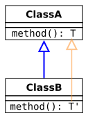
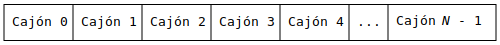

Ricardo Pérez López
IES Doñana, curso 2025/2026
La agregación se consigue haciendo que el objeto agregador contenga, entre sus variables de instancia, una referencia al objeto agregado.
Para que sea agregación, la vida del objeto agregado no debe depender necesariamente del objeto agregador; es decir, que al destruirse el objeto agregador, eso no signifique que se tenga que destruir también al objeto agregado.
Eso implica que puede haber en el programa varias referencias al objeto agregado, no sólo la que almacena el agregador.
Lo habitual en la agregación es que la variable de instancia que almacene la referencia al objeto agregado se asigne, o bien directamente (si la variable tiene la suficiente visibilidad) o bien a través de un método que reciba la referencia y se la asigne a la variable de instancia.
Ese método puede ser (y suele ser) un constructor de la clase.
Ejemplo:
En la agregación, es frecuente encontrarnos con métodos getter y setter para la variable de instancia que hace referencia al agregado.
La composición se consigue haciendo que el objeto compuesto contenga, entre sus variables de instancia, una referencia al objeto componente.
Para que sea composición, la vida del objeto componente debe depender necesariamente del objeto compuesto; es decir, que al destruirse el objeto compuesto, se debe destruir también al objeto componente.
Eso implica que sólo puede haber en el programa una sola referencia al objeto componente, que es la que almacena el objeto compuesto.
Por eso, lo habitual en la composición es que el objeto compuesto sea el responsable de crear al objeto componente.
Normalmente, no hay setters para el componente y, en caso de haber getters, deberían devolver una copia del objeto componente, y no el objeto componente original.
Java es un lenguaje con generalización simple, por lo que una clase sólo puede ser subclase directa de una única superclase.
La relación de generalización directa entre dos clases se declara
en la propia definición de la subclase usando la cláusula extends:
public]
[abstract |
final] class
⟨subclase⟩
[extends ⟨superclase⟩]
{}.]identificadordonde ⟨subclase⟩ y ⟨superclase⟩ son los nombres de la subclase directa y la superclase directa, respectivamente.
En Java también se dice que la subclase extiende a su superclase directa.
Cuando no se especifica la superclase directa a la hora de
definir una clase, el compilador sobreentiende que esa clase es subclase
directa de la clase Object.
A partir de ese momento, se introduce en el sistema de tipos una regla que dice que:
⟨subclase⟩ <_1 ⟨superclase⟩
Por tanto, se puede decir que el tipo definido por la subclase es un subtipo del tipo definido por la superclase.
Esto va a permitir, entre otras cosas, el polimorfismo entre la subclase y la superclase.
Mediante el mecanismo de la herencia, una subclase hereda ciertos miembros de sus superclases (directas o indirectas), dependiendo de la visibilidad de esos miembros.
Los miembros con visibilidad privada no se heredan.
Los miembros con visibilidad pública se heredan siempre.
Los miembros con visibilidad predeterminada se heredan si la subclase y la superclase pertenecen al mismo paquete.
Los miembros con visibilidad protegida se heredan siempre, aunque la subclase y la superclase pertenezcan a paquetes distintos.
ObjectLa clase Object es la raíz
de la jerarquía de clases en Java.
Toda clase en Java es subclase (directa o indirecta) de Object.
Eso significa que todas las clases heredarán los métodos
definidos en Object.
Los más interesantes son equals, hashCode y toString.
Más información en:
https://docs.oracle.com/en/java/javase/14/docs/api/java.base/java/lang/Object.html
La visibilidad protegida está pensada para cuando queremos limitar la visibilidad de un miembro de una clase a sus posibles subclases.
Pero no debemos olvidar que, en Java, un miembro con visibilidad protegida también puede ser accesible desde cualquier clase que pertenezca al mismo paquete que la clase donde está declarado el miembro.
Las variables protegidas de una clase son visibles para sus subclases, pero sólo a través de objetos del tipo de la subclase o sus subtipos.
En otras palabras, una subclase puede ver una variable protegida de su superclase como una variable heredada, pero no puede acceder a esa misma variable a través de una referencia a la propia superclase.
Esto puede parecer un poco confuso al principio, ya que puede que no resulte obvio que los modificadores de visibilidad no restringen el acceso entre instancias de la misma clase de la misma manera que restringen el acceso entre instancias de diferentes clases.
Dos instancias de la misma clase pueden acceder a todos los miembros de la otra, incluidos los privados, siempre que se acceda a través de una referencia del tipo correcto.
Dicho de otra manera: dos instancias de Gato pueden
acceder a todas las variables y métodos de cada uno (incluidos los
privados), pero un Gato no puede acceder a un miembro
protegido de una instancia de Animal a menos que el
compilador pueda probar que el Animal es un
Gato.
Recordemos que, por el principio de sustitución de Liskov, se puede usar una instancia de una clase allí donde se espere una instancia de una superclase suya:
Eso hace que el tipo estático y el tipo dinámico de b
puedan no coincidir.
¿Qué ocurre si intentamos invocar un método sobre
b?
En un lenguaje de tipado estático como Java, el compilador comprueba que el método que se quiere invocar sobre un objeto es compatible con el tipo declarado (el tipo estático) para ese objeto.
Eso quiere decir que el compilador tiene que determinar, en tiempo de compilación, si un objeto de ese tipo puede responder a la invocación de ese método.
Para comprobar si el método es compatible con el tipo del objeto sobre el que se está invocando, el compilador hace un análisis estático de la expresión de la invocación del método para determinar cuál es el tipo estático del objeto sobre el que se invoca.
Eso significa que, en la invocación:
⟨expr⟩.m()
el compilador determina el tipo de ⟨expr⟩ en tiempo de compilación, y
comprueba si el método m es compatible con ese tipo.
Por ejemplo, si ese tipo es una clase, comprueba si esa clase posee ese método (porque lo ha definido ella o porque lo ha heredado) y si es accesible según las reglas de visibilidad.
Como esa comprobación se hace en tiempo de compilación y buscando el tipo estático, al mecanismo de comprobación de la existencia del método se le denomina ligadura temprana (early binding).
Ejemplos:
Si se está invocando el método sobre una variable, el tipo será el tipo estático de la variable:
Si se está invocando el método sobre una expresión más complicada, el tipo será el tipo de esa expresión calculado por el compilador en tiempo de compilación:
// El método «despedir» debe ser compatible con «Docente», porque un
// docente es un trabajador:
(new Docente()).despedir(); Aquí, la expresión (new Docente())
tiene el tipo Docente, cosa que el compilador puede
calcular perfectamente.
Los métodos heredados desde una superclase (siempre que no se
hayan marcado como final) se pueden
sobreescribir.
Sobreescribir o redefinir un método heredado consiste en definir, en la subclase, un método (el método que sobreescribe o que redefine) con el mismo nombre y la misma lista de parámetros que el método heredado de la superclase (el método sobreescrito o redefinido).
El tipo de retorno del método que redefine tiene que ser compatible con el tipo de retorno del método redefinido, cosa que estudiaremos luego con más profundidad.
Por ahora sólo diremos que si dos tipos de retorno son iguales, entonces son compatibles.
En Java, se recomienda (pero no es obligatorio) que el método que
redefine (el de la subclase) se defina usando el decorador @Override.
Ejemplo:
Al invocar un método sobre un objeto, el método concreto que se ejecutará dependerá del tipo dinámico del objeto sobre el que se invoca el método.
Por tanto, el método que acabará ejecutándose se elige en tiempo de ejecución dependiendo del objeto que recibe el mensaje, es decir, dependiendo del objeto sobre el que se está intentando invocar el método.
A este mecanismo se le denomina despacho dinámico (dynamic dispatch).
Java implementa el despacho dinámico en todos los
métodos excepto en los private, final o static.
class Base {
public String hola(String s) {
return "Hola, " + s + ", soy la clase Base";
}
}
class Derivada extends Base {
@Override
public String hola(String s) {
return "Hola, " + s + ", soy la clase Derivada";
}
}
class Principal {
public static void main(String[] args) {
Base a = new Base();
Derivada b = new Derivada();
Base c = new Derivada();
a.hola("Pepe"); // Invoca el «hola» de «Base»
b.hola("Pepe"); // Invoca el «hola» de «Derivada»
c.hola("Pepe"); // Invoca el «hola» de «Derivada»
}
}Imprime:
Hola, Pepe, soy la clase Base
Hola, Pepe, soy la clase Derivada
Hola, Pepe, soy la clase DerivadaLa ligadura temprana (early binding)
garantiza, en tiempo de compilación, que es seguro ejecutar el
método hola sobre los objetos que hay en las variables
a, b y c, ya que todas ellas
tienen un tipo estático compatible con la existencia de un método
hola (las clases Base y Derivada
disponen del método hola).
El despacho dinámico (dynamic dispatch)
selecciona, en tiempo de ejecución, el método concreto que se
ejecutará al invocar al método hola sobre los objetos que
hay en las variables a, b y c,
según el tipo dinámico del objeto que recibe el mensaje.
Por ejemplo:
El objeto que hay en la variable a es una instancia
de Base, por lo que el método hola que se
ejecutará será el de Base.
El objeto que hay en la variable c es una instancia
de Derivada, por lo que el método hola que se
ejecutará será el de Derivada.
Esto es así aunque ambas variables (a y c)
estén declaradas de tipo Base, porque lo que importa aquí
es el tipo dinámico, no el estático.
En el siguiente ejemplo, un método llama a otro. El método que se ejecute dependerá del tipo dinámico del objeto sobre el que se invoque:
class Base {
public void hola() {
System.out.println(nombre());
}
public String nombre() {
return "Base";
}
}
class Derivada extends Base {
@Override
public String nombre() {
return "Derivada";
}
}
public class Principal {
public static void main(String[] args) {
Base b = new Derivada();
b.hola();
}
}Imprime:
DerivadaEl motivo por el que el método hola imprime
Derivada y no Base es el siguiente:
El método es invocado sobre un objeto de la clase
Derivada.
El método no está redefinido; tan sólo existe un método
hola y está en la clase Base.
Por tanto, dentro de ese método, la referencia this tiene el
tipo estático Base.
En cambio, en esa invocación concreta del método, this tiene el
tipo dinámico Derivada.
La sentencia de la línea 3 equivale a la siguiente (con el this):
en la que se invoca a nombre sobre un objeto cuyo tipo
dinámico es Derivada.
Por tanto, se acaba invocando al método nombre de
Derivada, que devuelve Derivada.
La subclase no puede reducir la visibilidad del método redefinido. Por tanto, el método que redefine debe tener, al menos, la misma visibilidad que el método redefinido, pero nunca menos.
Sí que se puede ampliar la visibilidad:
Esta restricción tiene sentido si recordamos que un dato de un subtipo debe poder usarse en cualquier sitio donde se espere un dato de un supertipo.
Por ejemplo, un Mamífero es una subclase de
Animal y, por tanto, debe poderse usar allí donde se espere
un Animal.
Es decir: un Mamífero es un
Animal.
Si pudiéramos sobreescribir un método con otro método menos
visible, entonces podríamos tener el problema de que el
Mamífero no podría ser capaz de hacer todo lo que puede
hacer un Animal.
Las variables (de instancia o estáticas) de una clase se pueden redefinir sin restricción alguna, simplemente declarando en la subclase una variable con el mismo nombre que la variable heredada de una superclase, sin importar el tipo.
Por tanto, las dos variables (la definida en la subclase y la definida en la superclase) pueden tener el mismo nombre pero distinto tipo.
Asimismo, las dos variables pueden tener cualquier visibilidad; es decir, la visibilidad de ambas variables es independiente una de la otra.
A todos los efectos, son variables completamente diferentes.
Es como si la variable de la subclase hiciese sombra a la de la superclase.
Aquí, las dos variables de instancia x son distintas
e independientes:
class Base {
public int x; // Esta es una variable...
}
class Derivada extends Base {
protected String x; // ... y esta es otra distinta
public String getX() {
return x; // Accede a la «x» de Derivada
}
}
public class Prueba {
public static void main(String[] args) {
Base b = new Base();
Derivada d = new Derivada();
Base bd = new Derivada();
b.x = 4; // Accede a la «x» de Base
d.x = "Hola"; // Accede a la «x» de Derivada
bd.x = 5; // Accede a la «x» de Base
System.out.println(d.getX()); // Imprime «Hola»
}
}Imprime:
HolaPor ejemplo:
class Base {
public String nombre = "Base";
public String getNombre() {
return nombre;
}
}
class Derivada extends Base {
protected String nombre = "Derivada";
}
public class Prueba {
public static void main(String[] args) {
Base b = new Base();
Derivada d = new Derivada();
Base bd = new Derivada();
System.out.println(b.getNombre());
System.out.println(d.getNombre());
System.out.println(bd.getNombre());
}
}Imprime:
Base
Base
BaseEn cambio, si se redefine el método getNombre, el
resultado es distinto:
class Base {
public String nombre = "Base";
public String getNombre() {
return nombre;
}
}
class Derivada extends Base {
protected String nombre = "Derivada";
@Override
public String getNombre() {
return nombre;
}
}
public class Prueba {
public static void main(String[] args) {
Base b = new Base();
Derivada d = new Derivada();
Base bd = new Derivada();
System.out.println(b.getNombre());
System.out.println(d.getNombre());
System.out.println(bd.getNombre());
}
}Imprime:
Base
Derivada
DerivadaEl motivo es que la ligadura temprana tiene en cuenta el tipo estático de un objeto (no el dinámico) al resolver una variable de instancia del objeto.
Recordemos que:
equivale a:
En el método getNombre de Base, la
referencia this tiene el
tipo estático Base. Por eso, el getNombre de
Base accede siempre al nombre de
Base.
En cambio, en el mismo método redefinido en
Derivada, la referencia this tiene el
tipo estático Derivada. Por eso, el getNombre
de Derivada accede siempre al nombre de
Derivada.
Por tanto, en el siguiente código:
Base b = new Base();
Derivada d = new Derivada();
Base bd = new Derivada();
System.out.println(b.getNombre()); // Imprime «Base»
System.out.println(d.getNombre()); // Imprime «Derivada»
System.out.println(bd.getNombre()); // Imprime «Derivada»tenemos que:
b.getNombre()
llama al método de Base, el cual accede al
nombre de Base.
d.getNombre()
llama al método de Derivada, el cual accede al
nombre de Derivada.
bd.getNombre()
llama al método de Derivada, el cual accede al
nombre de Derivada.
superEn Java, la palabra reservada super es una
variable especial que se puede usar dentro de una clase y que hace
referencia a un objeto de la superclase directa de la clase
actual.
Cuando se crea una instancia de una clase, automáticamente se
crea de forma implícita una instancia de su superclase directa, a la que
se tiene acceso a través de la variable super.
A través de esa variable, se puede invocar métodos de la superclase directa o acceder a variables de instancia de la superclase directa.
Acceder a una variable de instancia de la superclase directa:
class Animal {
String color = "blanco";
}
class Perro extends Animal {
String color = "negro";
void imprimirColor() {
System.out.println(color); // imprime el color de Perro
System.out.println(super.color); // imprime el color de Animal
}
}
public class Prueba {
public static void main(String args[]) {
Perro p = new Perro();
d.imprimirColor();
}
}Imprime:
negro
blancoEjecutar un método de instancia de la superclase directa:
class Animal {
void comer () {
System.out.println("Comiendo...");
}
}
class Perro extends Animal {
@Override
void comer() {
System.out.println("Comiendo pan...");
}
void ladrar() {
System.out.println("Ladrando...");
}
void hacer() {
super.comer();
ladrar();
}
}
public class Prueba {
public static void main(String args[]) {
Perro p = new Perro();
p.hacer();
}
}Imprime:
Comiendo...
Ladrando...Invocar al constructor de la superclase directa:
Imprime:
Se ha creado un animal
Se ha creado un perrosuper()
como primera sentencia del constructor de la subclase si éste no incluye
ninguna llamada a super()
o this():→ compilador →
super()
como primera sentencia:Por ejemplo:
Imprime:
Se ha creado un animal
Se ha creado un perroEl tipo de retorno del método redefinido y del método que lo redefine deben ser compatibles.
El objetivo a alcanzar es que sea seguro (desde el punto de vista del sistema de tipos) usar un método con un determinado tipo de retorno donde se espera usar un método con un tipo de retorno diferente.
La teoría de tipos afirma que es seguro sustituir un método
f por otro método g si f devuelve
un valor de un tipo más general que g.
Por ejemplo, si tenemos que Gato <: Animal, y hay
un método que devuelve un valor de tipo Animal, es seguro
sustituir ese método por otro que devuelva un valor de tipo
Gato.
Precisamente, lo que hace la sobreescritura de métodos es sustituir un método por otro. Por tanto, es importante que esa sustitución se haga de forma que resulte segura.
La compatibilidad entre el tipo de retorno de un método redefinido y el de un método que lo redefine, se establece en Java por medio de estas dos reglas:
Si el tipo de retorno es un tipo primitivo, los dos tipos de retorno deben ser el mismo.
Por ejemplo: si el tipo de retorno del método redefinido es int, el del
método que lo redefine también deberá ser int.
Si el tipo de retorno es un tipo referencia, el tipo de retorno del método que redefine debe ser un subtipo del tipo de retorno del método redefinido.
Por ejemplo: si el tipo de retorno del método redefinido es Number, el tipo
de retorno del método que lo redefine deberá ser un subtipo de Number (lo que
incluye al propio Number).
Esto se puede resumir diciendo:
En Java, las clases son covariantes en el tipo de retorno de sus métodos.
Es decir, que el tipo de retorno de los métodos puede cambiar en la misma dirección que la subclase:

En consecuencia, el tipo de un método redefinido puede sustituirse en el método que lo redefine por otro tipo «más estrecho», es decir, por un subtipo del tipo original.
Es importante recordar que la covarianza sólo está permitida entre tipos referencia, no entre tipos primitivos.
Más formalmente, supongamos que S y T
son dos clases que cumplen que S <:
T y, además, ambas clases definen un método m
(definido en T y redefinido en S) de forma
que:
El tipo de retorno de m en S es R1.
El tipo de retorno de m en T es R2.
En tal caso, decimos que un lenguaje de programación orientado a
objetos es covariante en el tipo de retorno si se tiene
que cumplir que R1 <:
R2.
Esta regla garantiza seguridad en el tipo del método cuando se invoca el método redefinido sobre instancias de la subclase.
En general, la covarianza es una propiedad que puede tener un tipo compuesto por otros tipos.
Sean A y B dos tipos en un sistema de tipos, y sean
T\!{\langle}A{\rangle} y T\!{\langle}B{\rangle} dos tipos construidos
sobre A y B, respectivamente. Si A <: B, se dice que:
T es covariante
si T\!{\langle}A{\rangle}
<: T\!{\langle}B{\rangle}.
T es
contravariante si T\!{\langle}B{\rangle} <:
T\!{\langle}A{\rangle}.
T es invariante si no es covariante ni contravariante.
En este contexto, a T se le considera un constructor de tipos.
Nótese que si T se construye con más de un parámetro, puede ser covariante o contravariante de forma indistinta en cada uno de ellos.
Por ejemplo, los arrays en Java son tipos compuestos de otro tipo, que es el tipo de los elementos que contiene el array.
«Array de enteros» (int[])
es un tipo construido a partir del tipo int.
«Array de cadenas» (String[])
es otro tipo construido a partir del tipo String.
Los arrays en Java son covariantes, lo que significa que
si A <: B, entonces A[] <: B[].
Por ejemplo, como sabemos que String
<: Object, eso
significa que String[]
<: Object[].
Es decir: allí donde se espera un array de Object, se puede
poner un array de String.
El tipo que representa la signatura de un método se puede escribir como S{\langle}\overline{P},R{\rangle}, donde:
\overline{P} representa la tupla de todos los tipos que aparecen en la lista de parámetros, en el orden en el que aparecen.
R representa el tipo de retorno del método.
Podemos decir que si un método f tiene la signatura
S{\langle}\overline{P},R_1{\rangle} y
otro método g tiene la signatura S{\langle}\overline{P},R_2{\rangle}, siempre
se debe cumplir que:
Si R_1 <: R_2, entonces S{\langle}\overline{P},R_1{\rangle}
<: S{\langle}\overline{P},R_2{\rangle}.
O, dicho de otra forma: es seguro (desde el punto de vista del
sistema de tipos) sustituir el método g por el método
f ya que el tipo de retorno de f es un subtipo
de el de g.
Este es un resultado bien conocido de la teoría de tipos.
El tipo de una clase T (que indicaremos como T) puede interpretarse como un tipo compuesto
por los tipos de sus miembros, incluyendo los de sus métodos.
Si la clase T tiene un método m con
signatura S{\langle}\overline{P},R{\rangle}, el tipo de
la clase lo podemos representar como T\!{\langle}S{\langle}\overline{P},R{\rangle}{\rangle}.
En ese caso, decimos que:
T\!{\langle}S{\langle}\overline{P},R_1{\rangle}{\rangle}
<: T\!{\langle}S{\langle}\overline{P},R_2{\rangle}{\rangle}
si S{\langle}\overline{P},R_1{\rangle}
<: S{\langle}\overline{P},R_2{\rangle}
Pero:
S{\langle}\overline{P},R_1{\rangle}
<: S{\langle}\overline{P},R_2{\rangle} si
R_1 <: R_2
Por tanto:
T\!{\langle}S{\langle}\overline{P},R_1{\rangle}{\rangle}
<: T\!{\langle}S{\langle}\overline{P},R_2{\rangle}{\rangle}
si R_1 <: R_2
Es decir: una clase A es subtipo de otra clase
B si ambas tienen el mismo método pero el tipo de retorno
del método en A es subtipo del tipo de retorno del mismo
método en B.
Esa es precisamente la definición de covarianza: un tipo compuesto es covariante cuando cumple la condición anterior.
Los tipos de los parámetros del método redefinido deben coincidir exactamente con los tipos de los parámetros del método que lo redefine, lo que se puede resumir diciendo:
En Java, las clases son invariantes en los tipos de los parámetros de sus métodos.
Si los tipos de los parámetros no son idénticos, entonces lo que se está haciendo es una sobrecarga en lugar de una redefinición.
Por eso siempre es conveniente usar el decorador @Override para
asegurarse de que no está ocurriendo ésto accidentalmente.
equalsEl método equals nos permite
comparar dos objetos para ver si son iguales.
Ese método está definido en la clase Object y, por
tanto, todos los objetos de cualquier clase en Java dispone de ese
método.
Muchas clases de la librería de Java redefinen ese método para crear su propia versión del concepto de igualdad.
De la misma forma, lo normal es que las clases definidas por el
programador implementen su propia versión del método equals, redefiniendo el que heredan de su
superclase.
Así, los objetos de una clase definida por el programador se podrán comparar entre sí y con otros objetos de otras clases.
La definición que hace la clase Object del método
equals sólo compara referencias,
por lo que es equivalente a la siguiente:
Esto significa que, de entrada, dos objetos son iguales únicamente si son idénticos (es decir, si son el mismo objeto).
En general, esta implementación no es conveniente y habría que redefinirla adecuadamente en cada caso.
Lo habitual es comparar el valor de algunos campos de los dos objetos.
Por ejemplo, supongamos una clase Persona con tres
campos:
Tenemos dos objetos que básicamente representan a la misma persona (es decir, que son lógicamente equivalentes):
En cambio, el método equals
considera que son diferentes ya que compara diferencias en lugar del
valor de sus campos:
Existen varias condiciones que el método equals debe garantizar, y que están
recogidas en la documentación de la clase Object.
Suponiendo que x, y y z son
valores referencia no nulas, siempre se tiene que cumplir:
Reflexividad: x.equals(x)
== true.
Simetría: x.equals(y)
== true si y sólo si
y.equals(x)
== true.
Transitividad: si x.equals(y)
== true e y.equals(z)
== true, entonces
x.equals(z)
== true.
Consistencia: si invocamos varias veces x.equals(y),
debe devolver consistentemente true o false, suponiendo
que no se ha modificado ninguna información usada en la comparación de
igualdad de los objetos.
No nulidad: x.equals(null)
== false.
Para crear un método que satisfaga las condiciones anteriores, primero hay que seleccionar los campos que se van a comparar.
Luego, hay que realizar estos tres pasos en el método equals:
Si this y la
referencia del otro objeto son iguales, los objetos son iguales; en otro
caso, ir al paso 2.
Si la otra referencia es null o no tiene
el tipo adecuado, los objetos son distintos; en otro caso, ir al paso
3.
Si todos los campos seleccionados son iguales, los objetos son iguales; en otro caso, son distintos.
Un patrón típico sería el siguiente, suponiendo que queremos
redefinir el método equals en la
clase MiClase:
public boolean equals(Object obj) {
// Si son idénticos, son iguales:
if (this == obj) {
return true;
}
// No es igual a una referencia nula:
if (obj == null) {
return false;
}
// Si las clases no coinciden, los objetos no son iguales:
if (getClass() != obj.getClass()) {
return false;
}
// Desde aquí, ya es seguro hacer el casting a MiClase:
MiClase otro = (MiClase) obj;
// Aquí ya se compararían los valores de los campos:
return campo1 == otro.campo1 && campo2 == otro.campo2 && ...;
}La condición de que las clases de los dos objetos tienen que coincidir, a veces puede resultar demasiado fuerte y se podría relajar.
Por ejemplo, se podría permitir que una clase sea subclase de la otra:
Pero para eso, es necesario que los campos que se usen para comparar los objetos sean accesibles y no se hayan redefinido por otras distintas (en este último caso, se usarían las variables originales, sin redefinir).
Además, el operador instanceof tiene
la ventaja de que también comprueba si es una referencia nula.
En el ejemplo de la Persona, se podría hacer lo
siguiente:
class Persona {
private String nombre;
private String apellidos;
private int edad;
// constructores, getters and setters
@Override
public boolean equals(Object otro) {
// Comprueba si son el mismo objeto:
if (this == otro) {
return true;
}
// Comprueba si el otro es una Persona y no nula:
if (!(otro instanceof Persona)) {
return false;
}
// Desde aquí, ya es seguro hacer el casting a Persona:
Persona persona = (Persona) otro;
// Compara todos los campos necesarios:
return edad == persona.edad &&
Objects.equals(nombre, persona.nombre) &&
Objects.equals(apellidos, persona.apellidos);
}
}En el ejemplo anterior hemos usado el método java.util.Objects.equals
(o, dicho de otra forma, el método equals de la clase Objects del paquete java.util)
para comprobar si dos cadenas son iguales, lo que nos previente de
posibles errores de NullPointerException.
Aquí comparamos la igualdad de tres objetos. Dos de ellos corresponden a la misma persona:
Persona p1 = new Persona("Juan", "Pérez", 31); // una persona
Persona p2 = new Persona("Juan", "Pérez", 31); // la misma persona
Persona p3 = new Persona("María", "González", 30); // otra persona
System.out.println(p1.equals(p2)); // true
System.out.println(p2.equals(p3)); // false
System.out.println(p3.equals(p3)); // true (reflexividad)En Python, la identidad de un objeto se representa mediante un
número entero que se puede obtener a través de la función id y que
identifica y distingue a los objetos entre sí, de forma que dos objetos
tienen siempre distintos valores de id.
En Java no existe una función que devuelva la identidad de un objeto.
Lo más parecido a la función id en Java es
el método hashCode definido en la
clase Object.
Ya sabemos que el hashCode
de un objeto en Java es el equivalente al hash de Python
y, por tanto, no se corresponde exactamente con el concepto de
identidad.
Pero la implementación que hace la clase Object del método
hashCode garantiza que el valor que
devuelve es distinto para cada objeto, ya que se calcula a partir de la
dirección de memoria donde está almacenado el objeto.
El problema está cuando tenemos que redefinir el método hashCode en nuestras propias
clases.
hashCodeSi se redefine el método equals, es una buena práctica redefinir
también el método hashCode.
De no hacerlo, la clase podría no funcionar correctamente al
almacenarse en colecciones (como HashMap, HashSet o Hashtable) que
usen mecanismos de hashing para acceder a los
elementos.
Estas colecciones, salvo algunas diferencias, almacenan los datos en «cajones» (del inglés, buckets) de la siguiente forma:

Cuando se quiere guardar un objeto o en una
colección de este tipo, se invoca a o.hashCode(), lo que
devolverá un número entero que la colección usará para decidir en qué
cajón guardará ese objeto.
El cajón concreto que se usará viene dado por la expresión
(o.hashCode() % N), siendo N el número de cajones de la
colección.
Por tanto, todos los objetos que tengan el mismo valor de
hashCode() se almacenarán en el mismo cajón.
Si se quiere recuperar el objeto que se guardó, se llama de nuevo
al método hashCode para determinar
en qué cajón debe estar el objeto.
El objetivo de guardar los datos de esta forma es lograr almacenar y recuperar información en tiempo constante (lo cuál no ocurre siempre, pero se acerca).
Para ello, hay que procurar que al guardar los elementos en la colección, estos queden dispersos de forma uniforme en toda la colección, de manera que queden la menor cantidad de cajones vacíos y que no haya cajones donde se guarden muchos más elementos que otros.
El que no suceda esto depende, casi siempre, del valor que
devuelva el método hashCode para
cada objeto.
Cuando quiera recuperar un objeto, habrá que tener en cuenta que puede haber varios objetos en el mismo cajón.
Por eso, una vez que se ha decidido en qué cajón hay que mirar,
se usa el método equals para
encontrar el objeto deseado dentro del cajón, mirando uno por uno y de
forma secuencial.
Esta nos da una pista de que los métodos equals y hashCode deben estar coordinados entre
sí.
Por ejemplo, supongamos que guardamos tres objetos en esta
estructura, y el método hashCode de
los tres objetos devuelve 0.
Esto quiere decir que los tres objetos se gurdarán en el cajón 0.
Cuando quiera recuperarlos, tendré que recorrer de forma
secuencial el cajón 0 e ir mirando
uno a uno todos los objetos que hay guardados en este cajón para acceder
al que quiero.
El acceso pasa de ser directo a ser secuencial, que es mucho más lento.
Por lo tanto, ese método hashCode no es útil.
El método hashCode debe
cumplir tres condiciones (o, al menos, las dos primeras):
El hashCode de un objeto no
debería cambiar nunca durante la ejecución de un programa.
Si a.equals(b), entonces a.hashCode() ==
b.hashCode().
(Opcional) Dos objetos distintos deberían devolver un
hashCode distinto, pero tampoco es
estrictamente necesario.
Cuando tenemos dos objetos distintos que tienen el mismo hashCode, decimos que se ha producido una
colisión y, aunque en general resultan inevitables,
tenemos que tratar de minimizarlas para optimizar el rendimiento de las
colecciones basadas en hashing.
Vamos a ver cada condición con más detalle.
Siempre que se invoque en el mismo objeto más de una vez durante
la ejecución de una aplicación Java, el hashCode debe devolver constantemente el
mismo número entero, mientras no se modifique ningún dato usado por
equals para comparar un objeto con
otro:
persona1.hashCode(); // 400000
persona1.hashCode(); // 400000 (bien)
persona1.hashCode(); // 500000 (mal)Este número entero no tiene por qué permanecer igual de una ejecución a otra de la misma aplicación.
Si dos objetos son iguales según el equals, entonces al llamar al hashCode sobre cada uno de los dos
objetos se debe producir el mismo resultado entero:
No es necesario que dos objetos no iguales devuelvan hashCodes distintos, pero hacerlo mejora
el rendimiento de algunas colecciones:
La implementación más simple del método hashCode puede ser algo parecido a
ésto:
Siempre devuelve el mismo valor y satisface las condiciones obligatorias 1 y 2, aunque no satisface la condición opcional 3.
Por desgracia, este método es muy ineficiente ya que degrada totalmente los beneficios que proporcionan las colecciones basadas en hashing, puesto que provoca que todos los objetos se almacenen en el mismo cajón de la colección.
Una buena función de hashing tiende a generar diferentes valores hash para objetos que no son iguales, haciendo que los objetos se repartan de manera uniforme entre todos los cajones de la colección.
Para desarrollar un método hashCode válido y efectivo, se recomienda
el algoritmo propuesto por Joshua Bloch en su libro «Effective
Java»:
Crear un int result y
asignarle un valor no cero (por ej., 17).
Para cada campo f usado en el método equals:
Calcular un código hash para f y llamarlo
code:
f es un boolean: calcular
(f ? 0 : 1);f es un byte, char, short o int: calcular
(int) f;f es un long: calcular
(int) (f ^ (f >>> 32));f es un float: calcular
Float.floatToIntBits(f);f es un double: calcula
Double.doubleToLongBits(f);f es un objeto: usar f.hashCode(),
ó 0 si
f == null;f es un array: ver cada elemento como un
campo independiente y calcular el valor hash
recursivamente.Combinar el valor de code con result
así:
Devolver result como el código hash del
objeto.
Es importante no incluir en este algoritmo ningún campo que no se
utilice en equals.
Por ejemplo, una implementación más adecuada del método hashCode en nuestra clase
Persona podría ser:
Desde Java 7, se dispone del método java.util.Objects.hash
que permite obtener un código hash de forma rápida y sencilla,
ocultando todas esas constantes mágicas y todas esas comprobaciones de
nulos.
Gracias a ese método, nuestro hashCode queda mucho más sencillo:
Aquí se puede ver un ejemplo de uso del nuevo método hashCode sobre tres objetos. Dos de ellos
representan a la misma persona:
Persona p1 = new Persona("Juan", "Pérez", 31); // una persona
Persona p2 = new Persona("Juan", "Pérez", 31); // la misma persona
Persona p3 = new Persona("María", "González", 30); // otra persona
System.out.println(p1.hashCode()); // 443676584
System.out.println(p2.hashCode()); // 443676584
System.out.println(p3.hashCode()); // 1456026844Como puede comprobarse, se obtiene el mismo código hash sobre objetos iguales.
Si se sobreescribe el método equals es recomendable sobreescribir
también el método hashCode para
conservar el contrato entre ambos métodos: dos objetos iguales deben
retornar el mismo valor de hash.
El método equals no llama al
método hashCode para determinar la
igualdad de dos objetos.
Es recomendable, por no decir obligatorio, sobreescribir el
método equals porque la
implementación por defecto no es de mucha ayuda.
Si dos objetos no son iguales, no es necesario que sus hashCodes sean distintos; de hecho, dos
objetos diferentes pueden devolver el mismo valor
hash.
Si se necesita guardar los objetos en las estructuras señaladas
anteriormente (HashMap y
similares) es absolutamente indispensable sobreescribir el método hashCode; de lo contrario obtendrá
resultados inesperados o no deseados cuando se realicen operaciones de
guardar, consultar o eliminar los datos.
Una clase abstracta es aquella que se define con
el modificador abstract:
Las clases abstractas no se pueden instanciar, por lo que su principal utilidad es la de servir de superclase para otras subclases:
Un método abstracto es aquel que se define con
el modificador abstract y sin
cuerpo (es decir, sin un bloque de sentencias):
Las clases abstractas pueden o no contener métodos abstractos.
Si una clase contiene al menos un método abstracto, la clase en sí también debe definirse como abstracta.
Ejemplo:
Las definiciones que no llevan asociadas un valor también se denominan declaraciones (por eso, a las declaraciones de variables se las denomina así).
La definición de un método abstracto también es, en realidad, una declaración, ya que sólo se indica la signatura del método pero no su implementación. Por tanto, ahí no se está creando ningún método ni asociándolo al nombre del método.
Cuando una clase es subclase (directa o indirecta) de una superclase abstracta, esa subclase debe proporcionar un cuerpo a todos los métodos abstractos que haya heredado de su superclase.
De lo contrario, esa subclase también se deberá definir como abstracta.
El acto de proporcionar un cuerpo a un método abstracto también se denomina implementar el método abstracto.
Si dejamos algún método abstracto sin implementar, la subclase también se deberá definir como abstracta:
Una clase final es aquella que se define con el
modificador final:
No se pueden crear subclases de una superclase final:
Un método final es aquel que se define con el
modificador final:
Los métodos finales no se pueden redefinir.
Las clases finales y los métodos finales son dos conceptos que no tienen nada que ver uno con el otro. Una clase final puede tener o no métodos finales, y un método final puede estar o no en una clase final.
Por ejemplo:
No tiene sentido aplicar las cláusulas abstract y final a la vez
sobre una clase o un método: una clase o un método no pueden ser abstract y final al mismo
tiempo.
Se define una clase como final cuando interesa que esa clase no se pueda especializar con una subclase que pueda tener un comportamiento diferente.
Se define un método como final cuando interesa que su implementación no se pueda cambiar en una subclase.
En general, los métodos llamados desde un constructor deberían definirse como finales.
Si un constructor llamada a un método no final, una subclase podría redefinir ese método y provocar resultados sorprendentes o indeseables.